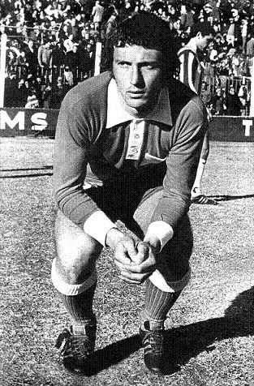
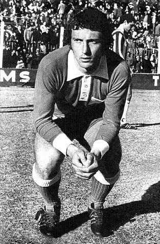

Educación
Pekerman inició estudios de educación física y luego de cinesiología, y repartía su tiempo para poder jugar en las inferiores de Argentinos. Su apodo era “polvorita”, por lo inquieto que era en la cancha.
Pekerman inició estudios de educación física y luego de cinesiología, y repartía su tiempo para poder jugar en las inferiores de Argentinos. Su apodo era “polvorita”, por lo inquieto que era en la cancha.
Tiene la seriedad perturbadora de los tímidos. Por eso, puede llegar a parecer una persona hosca. Aunque no lo es. En un ambiente propicio, relajado, en el que el tema de conversación sea el fútbol, es posible verlo sonreír hasta con los ojos.
Si hubiera que definirlo en una sola palabra, sería esta: perseverancia. La gente recuerda sus títulos mundiales con las selecciones juveniles de Argentina, su extenso palmarés, pero se olvida de sus momentos amargos: cuando una lesión en la rodilla lo obligó a dejar el fútbol a los 28 años y lo puso frente un futuro incierto con su esposa y su pequeña hija. La dura eliminación de Alemania 2006 con la selección de mayores, que después de muchas negativas, al fin había aceptado dirigir. Como a cualquier persona, resulta mejor conocerlo ante la adversidad que ante el triunfo.